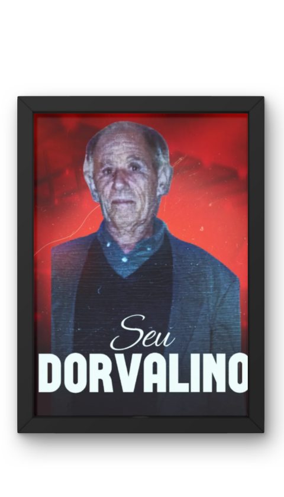
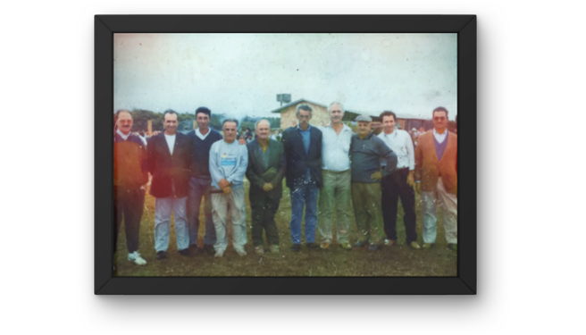
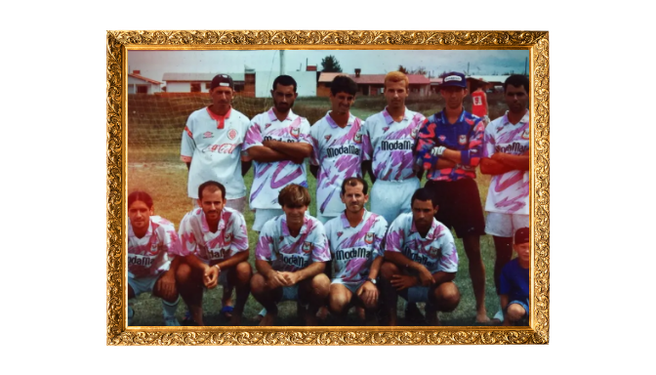
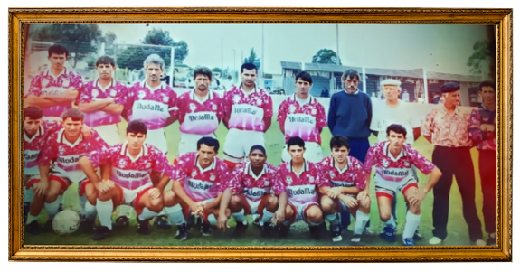
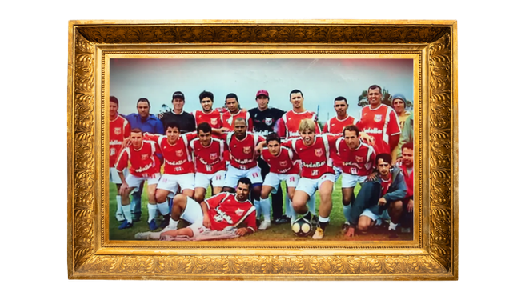

🔴 AO VIVO: Assista à TV União
🔔 Inscreva-se no Canal da Vila!
A arquibancada ficou pequena para a nossa paixão! Agora, você pode acompanhar todos os lances, golaços e emoções do União da Vila de onde estiver. Dê o play abaixo para assistir à nossa transmissão ao vivo e não perca nenhum detalhe da nossa jornada.
Onde a Nossa História Começou
A Raiz de Tudo (História e Seu Dorvalino)
Tudo começou em 1994, graças à visão e ao amor pelo futebol do nosso fundador, o saudoso Seu Dorvalino. Ele acreditava que a nossa comunidade precisava de uma camisa para chamar de sua, um símbolo de união e orgulho para Arroio do Sal. Liderados pela paixão de Seu Dorvalino, o União da Vila F.C. nasceu não apenas para disputar campeonatos, mas para ser uma verdadeira família. Desde os primeiros toques na bola no terrão até as grandes finais, o espírito de garra que ele nos ensinou sempre foi a nossa principal marca em campo.

Estádio Dorvalino Monteiro da Cunha
A Nossa Casa, o caldeirão!
Muito mais que um campo, o nosso estádio é a nossa verdadeira casa e carrega o nome do homem que fez tudo isso ser possível. É aqui que a nossa torcida canta, vibra e empurra o time rumo à vitória, cada palmo desse gramado guarda a história de suor e glória dos nossos jogadores. Em dia de jogo da Vila, o clima na beira do alambrado é inconfundível: é dia de festa em Arroio do Sal. A imagem a baixo é do dia da inauguração do nosso sagrado campo.

Nossas Maiores Glórias
Esquadrões de Ouro nossos Times Campeões
Campeão [Nome do Campeonato] - Ano [Ex: 2023]
Uma campanha inesquecível! Sob o comando do técnico [Nome do Técnico] e com gols decisivos de [Nome do Artilheiro/Jogador Destaque], o União da Vila levantou a taça após uma final emocionante contra o [Nome do Time Rival]. Um elenco que ficou marcado para sempre na memória do nosso torcedor.

Campeão [Nome do Campeonato] - Ano [Ex: 2023]
Uma campanha inesquecível! Sob o comando do técnico [Nome do Técnico] e com gols decisivos de [Nome do Artilheiro/Jogador Destaque], o União da Vila levantou a taça após uma final emocionante contra o [Nome do Time Rival]. Um elenco que ficou marcado para sempre na memória do nosso torcedor.

Campeão [Nome do Campeonato] - Ano [Ex: 2023]
Uma campanha inesquecível! Sob o comando do técnico [Nome do Técnico] e com gols decisivos de [Nome do Artilheiro/Jogador Destaque], o União da Vila levantou a taça após uma final emocionante contra o [Nome do Time Rival]. Um elenco que ficou marcado para sempre na memória do nosso torcedor.
